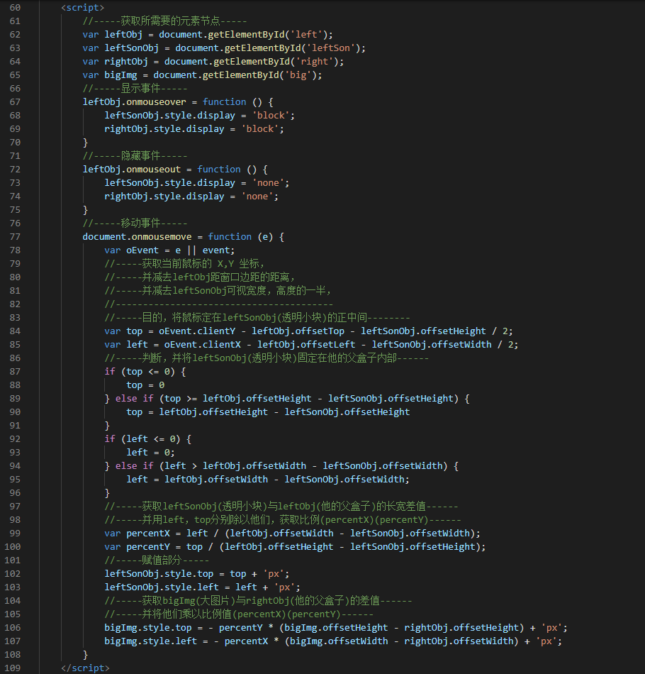

一、html，css部分
二、js部分

三、源代码部分
1 <head>
2 <meta charset="UTF-8">
3 <meta name="viewport" content="width=device-width, initial-scale=1.0">
4 <meta http-equiv="X-UA-Compatible" content="ie=edge">
5 <title>Document</title>
6 <style>
7 * {
8 margin: 0px;
9 padding: 0px;
10 list-style: none;
11 }
12
13 #left {
14 display: inline-block;
15 margin: 50px 0 0 50px;
16 width: 300px;
17 height: 230px;
18 position: relative;
19 top: 125px;
20 }
21
22 #right {
23 display: inline-block;
24 width: 500px;
25 height: 400px;
26 overflow: hidden;
27 position: absolute;
28 top: 175px;
29 left: 450px;
30 display: none;
31 }
32
33 #leftSon {
34 width: 180px;
35 height: 140px;
36 border: 1px solid #666;
37 background-color: rgba(90, 90, 90, 0.45);
38 position: absolute;
39 display: none;
40 position: absolute;
41 }
42
43 #big {
44 position: absolute;
45 }
46 </style>
47 </head>
48
49 <body>
50 <div id="left">
51 <div id="leftSon"></div>
52 <img src="img/smallpic.jpg" alt="">
53 </div>
54 <div id="right">
55 <img id="big" src="img/bigpic.jpg" alt="">
56 </div>
57 <script>
58 //-----获取所需要的元素节点-----
59 var leftObj = document.getElementById('left');
60 var leftSonObj = document.getElementById('leftSon');
61 var rightObj = document.getElementById('right');
62 var bigImg = document.getElementById('big');
63 //-----显示事件-----
64 leftObj.onmouseover = function () {
65 leftSonObj.style.display = 'block';
66 rightObj.style.display = 'block';
67 }
68 //-----隐藏事件-----
69 leftObj.onmouseout = function () {
70 leftSonObj.style.display = 'none';
71 rightObj.style.display = 'none';
72 }
73 //-----移动事件-----
74 document.onmousemove = function (e) {
75 var oEvent = e || event;
76 //-----获取当前鼠标的 X,Y 坐标，
77 //-----并减去leftObj距窗口边距的距离，
78 //-----并减去leftSonObj可视宽度，高度的一半，
79 //----------------------------------------
80 //-----目的，将鼠标定在leftSonObj(透明小块)的正中间--------
81 var top = oEvent.clientY - leftObj.offsetTop - leftSonObj.offsetHeight / 2;
82 var left = oEvent.clientX - leftObj.offsetLeft - leftSonObj.offsetWidth / 2;
83 //-----判断，并将leftSonObj(透明小块)固定在他的父盒子内部------
84 if (top <= 0) {
85 top = 0
86 } else if (top >= leftObj.offsetHeight - leftSonObj.offsetHeight) {
87 top = leftObj.offsetHeight - leftSonObj.offsetHeight
88 }
89 if (left <= 0) {
90 left = 0;
91 } else if (left > leftObj.offsetWidth - leftSonObj.offsetWidth) {
92 left = leftObj.offsetWidth - leftSonObj.offsetWidth;
93 }
94 //-----获取leftSonObj(透明小块)与leftObj(他的父盒子)的长宽差值------
95 //-----并用left，top分别除以他们，获取比例(percentX)(percentY)------
96 var percentX = left / (leftObj.offsetWidth - leftSonObj.offsetWidth);
97 var percentY = top / (leftObj.offsetHeight - leftSonObj.offsetHeight);
98 //-----赋值部分-----
99 leftSonObj.style.top = top + 'px';
100 leftSonObj.style.left = left + 'px';
101 //-----获取bigImg(大图片)与rightObj(他的父盒子)的差值------
102 //-----并将他们乘以比例值(percentX)(percentY)------
103 bigImg.style.top = - percentY * (bigImg.offsetHeight - rightObj.offsetHeight) + 'px';
104 bigImg.style.left = - percentX * (bigImg.offsetWidth - rightObj.offsetWidth) + 'px';
105 }
106 </script>
107 </body>